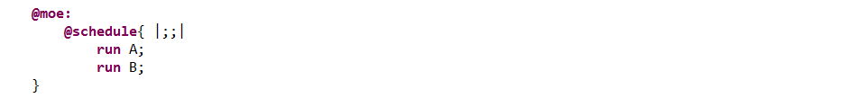
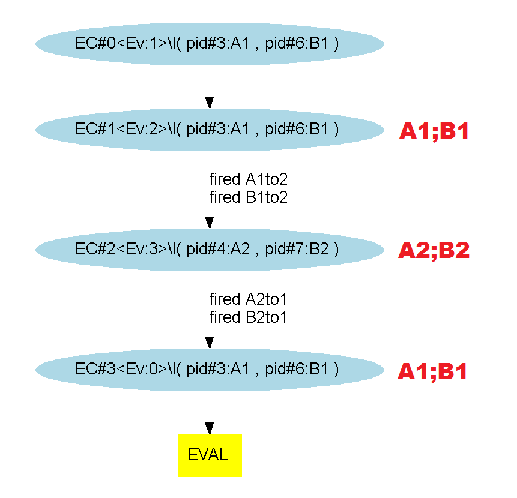

This is not a standard sequence: its evaluation terminates if one of the two processes P or Q terminate. We try to evaluate P. If it terminates, then Q is evaluated from the resulting context, otherwise, from the initial context. This sequence can be used to create a partial order which avoids combinatorial explosion resulting from machine interleaving.
Considering 2 processes : P and Q, with weak sequence :
Applying this on our most basic example, the "@moe:" section looks like :
And exploring the different paths with the symbolic engine (3, 4 and 5 evaluation steps) gives us (here the execution is simultaneous because nothing prevents it from doing so) :
